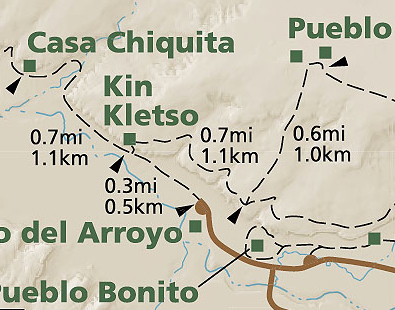
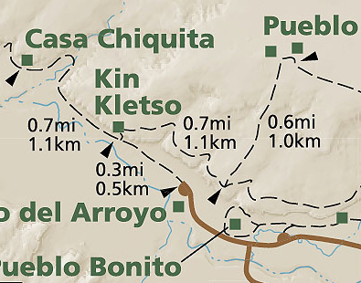

Hike New Mexico
w/ Tom & Ken
Kin Kletso Site Walk


 

- May 21, 2016: From the canyon wall
- May 21, 2016: Kletso on the approach
- May 21, 2016: Viewed from above on the canyon rim
- https://www.flickr.com/photos/139088815@N08/27176028682/in/album-72157668542309892
- https://www.flickr.com/photos/139088815@N08/26667133513/in/album-72157668542309892
- https://www.flickr.com/photos/139088815@N08/26997279590/in/album-72157668542309892
Kin Kletso is yet another of the many Great Houses in the Chaco Canyon area. About 0.3 miles from the parking area, it is a level walk to the ruins. The site is up against the canyon wall, and behind it is access to another site & loop hike: Pueblo Alto Loop. More information can be obtained from the Chaco Archive Site.